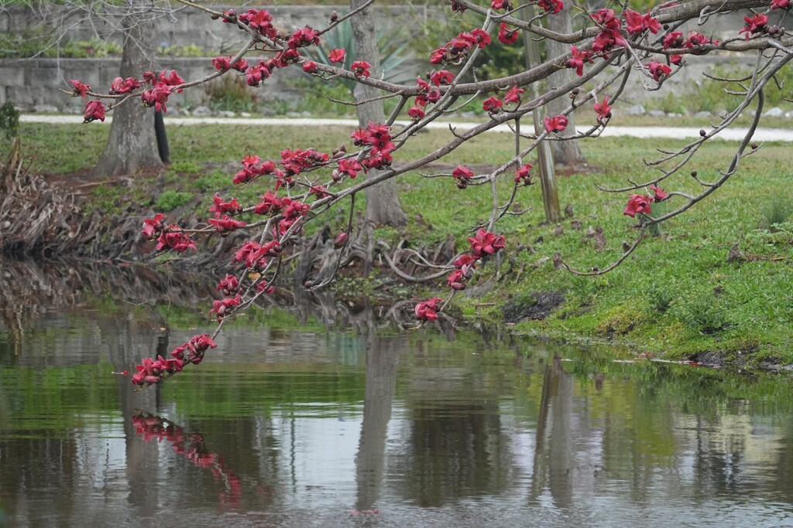

- A close relative of the Kapok — same subfamily, same spiny trunk, same strategy of flowering on bare branches before the leaves return. The Kapok stands to its left at the park; the comparison between the two is worth making.
- Flowers in late winter on bare branches, producing masses of red blooms that are among the most dramatic of any large tree in Florida. The timing — leafless trunk, no foliage competition — means the flowers have the entire tree to themselves.
- Native to tropical Asia, from India to southern China and Southeast Asia. In its native range a culturally significant tree in Buddhist and Hindu traditions.
Non-native. Native to tropical Asia — India, Sri Lanka, Myanmar, Thailand, southern China, and Southeast Asia. Member of Malvaceae, subfamily Bombacoideae — same subfamily as the Kapok, Silk Floss Tree, and Baobab elsewhere in the park.
- Standing on the path between the Red Silk Cotton Tree, the Kapok, and the nearby Baobab, visitors get something no label can replicate: a live side-by-side comparison of three members of the same subfamily.
- The shared lineage shows up immediately in the tiered branch architecture, the conical trunk spines, and the bare-branch flowering strategy — structural choices that converged across continents.
- Looking between the three trunks, the family resemblance is legible in a way that a description alone cannot convey. The spines, the branch angles, the silhouette against the sky — the botany becomes visible without any explanation required.
- The flowering is the seasonal event this tree is known for — peaking in late winter into early spring, typically March to early April in Bradenton. Visitors who arrive in January will find bare spiny branches; visitors who arrive in March will find a canopy on fire. When the leaves are off and the scarlet blooms cover the bare branches, the tree is visible from considerable distance.
- It is one of the more striking winter-flowering trees available for Central Florida gardens, and one that relatively few visitors will have seen before.
- In its native range across South and Southeast Asia the tree has deep cultural roots. In India it is associated with the deity Brahma and planted near temples. The flowers are used in ritual offerings. The cotton from the seed pods was historically used to stuff pillows and for insulation — the same practical role as the Kapok.
- The park decorates this tree with lights every year. It is not a task for the faint of heart — the conical spines on the trunk and branches are exactly as formidable as they look. When the seed pods release their silk in spring, the white fluff drifts across the park and puzzles visitors who look around wondering where it is all coming from. Looking up is always the reveal.
Hummingbirds, sunbirds in its native range, and bats work the flowers. The large red blooms and the winter timing — when few other trees are in bloom — make this tree a significant nectar source during a period of relative scarcity.
The seed pod cotton is collected by birds for nest lining. The spiny trunk deters climbing predators, making the canopy a relatively secure nesting site.
As a member of the bat-pollination themed collection alongside the Kapok, Silk Floss Tree, and Baobab, it contributes to the "Night Shift" story — the park's cluster of trees whose primary pollinator relationship is nocturnal.
In Florida, the large nectar-feeding bats of tropical Asia are absent, so local wildlife has taken over the pollination role entirely. When the tree blooms in Bradenton it becomes a daytime free-for-all — migrating Baltimore Orioles and Tanagers, honeybees, and mockingbirds all work the flowers heavily.
The tree's original nocturnal design has been repurposed by an entirely different cast of visitors.
Brilliant red, five-petaled, with a prominent staminal column. Appear in late winter on bare leafless branches. Produced in abundance — a flowering tree is one of the more striking sights in the park in late winter.
Woody capsules releasing masses of white cottony fiber containing the seeds. Birds collect the fiber for nesting.
Palmate compound, with 5 to 7 leaflets. Deciduous — the tree is bare in winter when it flowers.
Gray-green with large conical spines on trunk and major branches — same defensive strategy as the adjacent Kapok. Develops buttressing at the base with age.
In late winter, the red flowers on bare branches are visible from across the park. Year-round, the spiny trunk and the proximity to the Kapok and Baobab make this easy to locate. Compare trunk spines between the Red Silk Cotton and the Kapok side by side.
The seeds are edible when properly processed, and the flowers are eaten in some traditional dishes — but it isn't a significant food plant here.
No significant toxicity to people or dogs is documented.
Bombax ceiba is sometimes confused with the true kapok tree, Ceiba pentandra, which produces similar silky seed fiber and also bears trunk spines. The two are related within the family Malvaceae but are distinct genera: Bombax has red flowers and palmate leaves; Ceiba has white to pale pink flowers and is more commonly the commercial kapok source.
This tree's eventual size — potentially 60 to 75 feet tall with a spread approaching 60 feet — makes it a genuine long-term commitment in any landscape. At Palma Sola Botanical Park it has the space it needs to develop into the commanding specimen it becomes.


- © Rhonda Olschefskie (CC-BY-NC), via iNaturalist
- © katyperry (CC-BY-NC), via iNaturalist
- © Randall Carter (CC-BY-NC), via iNaturalist